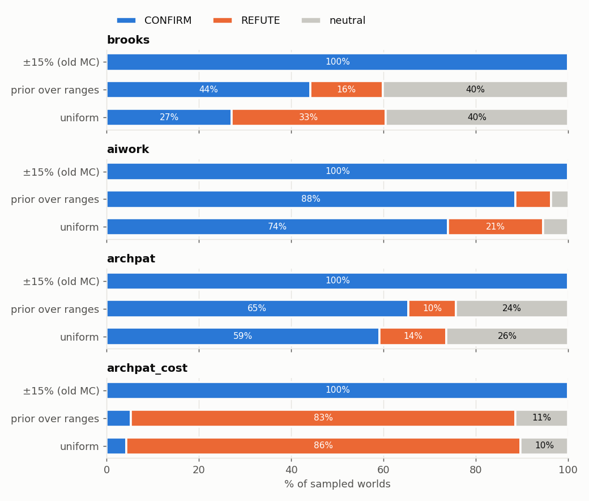
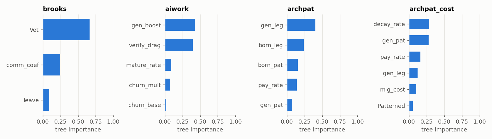
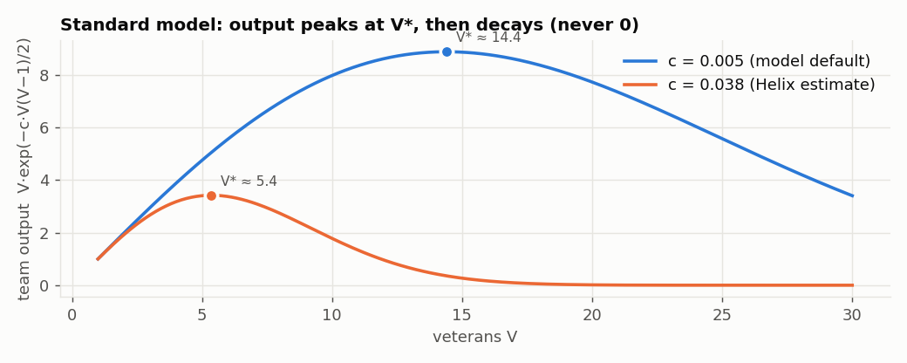
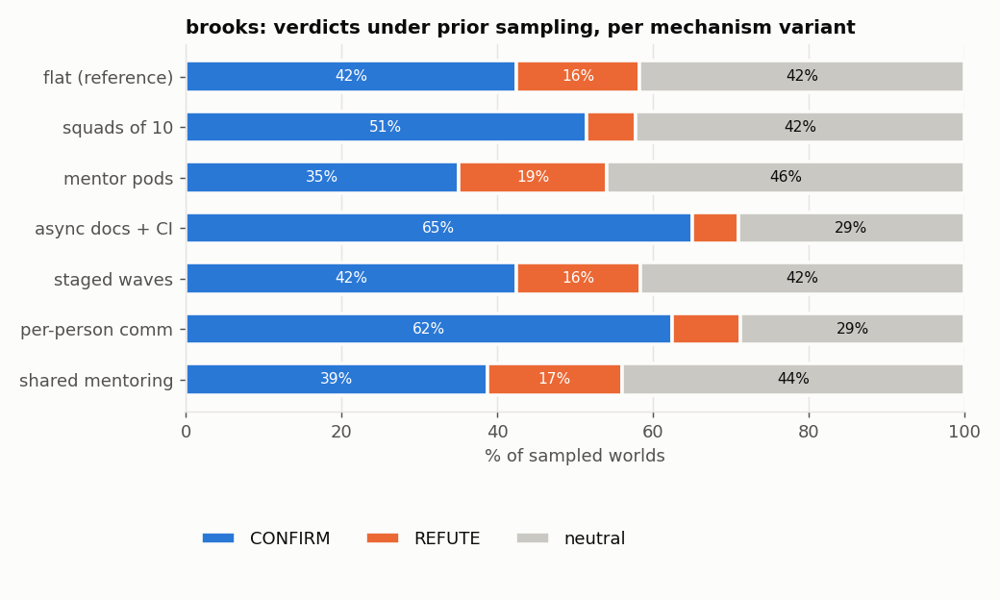
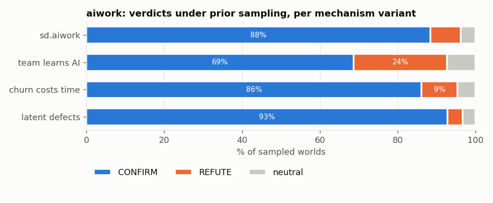
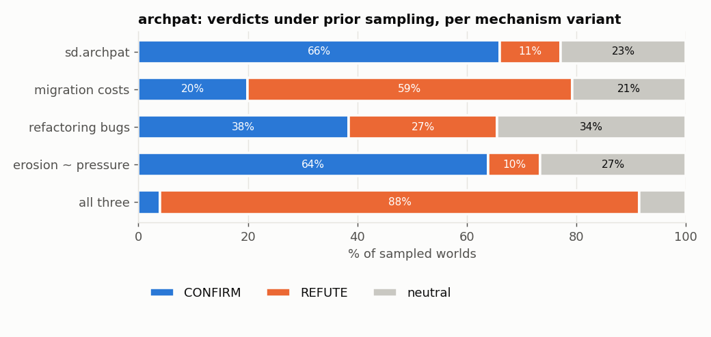

All numbers come from the generated evidence cards
(n = 2000 worlds per neighbourhood). Real-project results are on
C3.
C2.1 Robustness in three neighbourhoods

Every law looks 100% robust under the old ±15% protocol. Sampled
over declared ranges they separate: the standard Brooks model holds in 44%
of worlds (16% the opposite, 40% no difference), aiwork 88%, archpat 65%,
and priced archpat flips to 83% REFUTE.
law
±15%
prior over ranges
uniform
brooks (standard)
100 / 0 / 0
44 / 16 / 40
27 / 33 / 40
aiwork
100 / 0 / 0
88 / 8 / 4
74 / 21 / 5
archpat
100 / 0 / 0
65 / 10 / 24
59 / 14 / 26
archpat_cost
100 / 0 / 0
5 / 83 / 11
4 / 86 / 10
Format: % CONFIRM / REFUTE / neutral. Earlier Brooks models (archived in
outputs/archive/2026-11-06_before_standard_brooks/): the
original late-project model held in 11% of prior worlds (0% opposite, 88%
neutral), because overloaded teams froze at zero output.
C2.2 What decides each verdict

Decision-tree importance over prior-sampled worlds. Brooks is
decided by team size; aiwork by generation speed vs verification;
archpat by productivity and bug-rate differences, and, once migration is
priced, by erosion and the price itself.
C2.3 Brooks (the standard model)
One model for every test and report: a late project (backlog 1000)
scored by finish time; sd.brooks' communication and training
costs plus five literature structures as uncertain settings (newcomer
output, attrition, unsplittable work, overtime, rework; all off at the
default); bounded overload (time left for work = e−overhead);
time step 0.125.
Default: 10 hires make the project finish 11 ticks later
(the earlier model, whose overloaded teams froze at zero, said 88).
Threshold: the coordination optimum V* solves V(2V − 1) = 2/c (≈ 14 at
c = 0.005). The law holds when the post-hire team overshoots V*. Tipping
point on team size: hiring helps below 7.5 veterans, hurts above. A tiny core
(2 vets) REFUTEs (+51).
Decided by team size (importance 0.66), talking cost (0.25) and
veterans leaving (0.09).
Timing: early, mid and last-minute hires all CONFIRM (−12, −11, −9).
on_time_project (backlog 500): CONFIRMs only weakly (−6), and 20% of nearby worlds go neutral. The antecedent matters.

Team output vs size in the standard model. Output peaks at V*,
then decays without ever reaching zero.

Most structures still CONFIRM at default. Squads (−5), async
(−3) and per-person communication (−6) shrink the 11-tick delay; mentor pods
and shared mentoring make it vanish (neutral).
C2.4 aiwork
Machine: knock-out passes (without churn and verification, AI helps, +38).
Clamp FAIL: churn + maturation can drain more than the Wip stock in
one tick, so 24% of CONFIRMs rely on clamping a negative stock.
Approximate threshold for AI to help:
(1 + gen_boost)(1 − verify_drag) > 1 + churn_mult·churn_base/(mature_rate + churn_base).
Defaults give 0.78 < 1.40, so default AI hurts mainly because it is
slower (1.3 × 0.6), not because of churn.
Scenarios: vibe_coding, boilerplate and copilot_rct REFUTE. review_gate,
legacy_expert, half_adoption, short_sprint and slow_review_pipe CONFIRM.

Rival mechanisms barely move aiwork, except "team learns AI"
(verification drag decays), which cuts CONFIRM from 88% to 69%.
C2.5 archpat
Machine (reference): dead parameter pat_strength (FAIL). The knock-out FAILs:
with patterned code given the same productivity and bug rate as legacy,
migration still helps (+27) through the hard-coded paydown
pay × (1 + 0.5·share). Migration costs nothing: available is computed and never used.
Scenarios: all 8 CONFIRM, even "overengineered" and "patterns no safer".
The claim is close to built in.

Give migration a price (4 items/module) and prior CONFIRM drops
from 66% to 20%. Add refactoring-induced bugs and pressure-driven
erosion and it becomes 4% CONFIRM / 88% REFUTE.
C2.6 Summary
law
machine defects found
deciding factor
survives rival mechanisms?
brooks
phantom work, saturation clamp, not-late default, comm wall